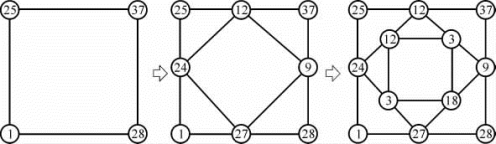
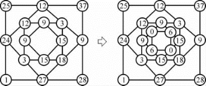
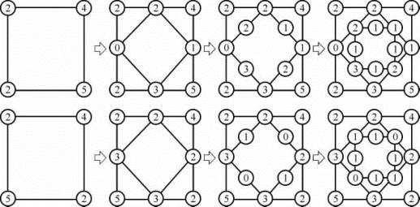
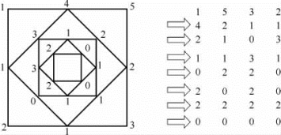
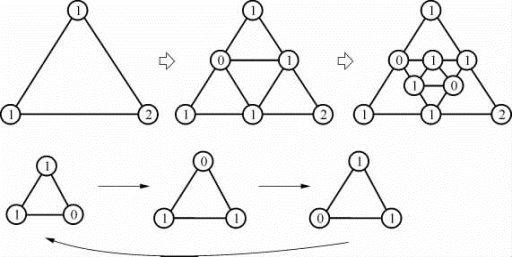
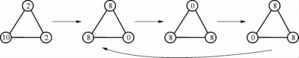
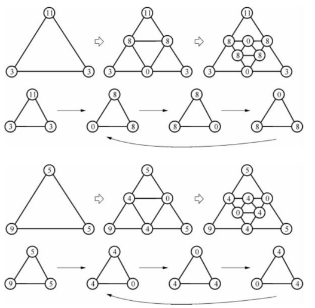
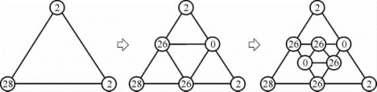
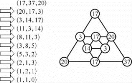
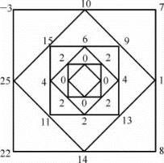

1 “众数归0”的狄非游戏——小学老师训练孩子的一个游戏
从开始直至结束，然后停下来。
——刘易斯·卡罗尔
狄非游戏
五年级的孩子们在老师进教室前总是闹哄哄的，孩子们总是在这时说笑打闹。可是一看到胖胖的玛丽老师在门口出现，这些孩子马上鸦雀无声，大家身体挺直，坐得端端正正。
为什么会这样呢？
原来孩子们和老师有一个约定，只要大家在上课时不吵不闹，专心学习，老师就会有奖励，或者在课后给他们巧克力糖，或者表演一些数学魔术，或者让他们看一些美丽的图片。
“玛丽老师早。今天您要给我们表演什么魔术？”
“还没有上课，你们就想看表演？今天我想让你们锻炼算术逻辑的能力。你们每4个同学一组，刚好我们有20个学生，请问我们可以分成几组？”
“20÷4＝5！”同学们异口同声地说。
“是的，共有5组。现在你们选喜欢的同学把桌子围成一个四边形。我们要玩一个数学比赛。你们赶快布置一下。”
玛丽老师给每组分40张纸，这些纸都是她的丈夫从办公室复印室取回的一面空白的废纸——老师环保意识强，要学生在这些纸上计算后才丢弃到“再生垃圾桶”里。
“你们每个人都有10张纸，我们今天要玩一种减法游戏。大家先画一个正方形，在每个角画一个圆圈，然后我们在上面填写一些数字。现在我让第一组的同学挑一个小于30的数让我填第一个圆圈。”
“25！25！”小朋友喊道。
“好！第二组，你们要填什么数呢？”
“我们要37！37！这是一个素数。”
“好！第三组，选一个你们要填的数。”
“我们要28。”
“好！第四组的同学，告诉我你们希望什么数？”
“1！我们就要1。”
玛丽老师在透明塑胶纸上依次写上学生们报的4个数字，然后说：“我现在在25和37之间的线上再画一个圆圈，填上这两个数字的差，37－25＝12。是的，我填12。
37和28之间，我画一个圆圈填上这两个数的差，那是37－28＝9。
当然同样在28和1之间的数，我要填什么呢？”
“27！27！”大家呼喊。
“对，我要填27。”
“最后我在25和1之间填上24。我把这4个新的圆圏，12，9，27，24每两个之间画一条直线，我得到一个新的正方形。现在我让你们用刚才的方法在这两个圆圈的中央画一个新的圆圈，并且填上它们的差，你们看得到怎样的新正方形？”
学生很快喊：“12，3，18，3。”
“对！你们再继续画新的正方形和计算该填的数字。”一会儿，学生说：“我们得到9，15，15，9。”

“你们再继续计算下一个正方形。”
同学们画一个新的正方形，里面的数字是0，6，0，6。

“你们再画下一个正方形。”
“哎呀！所有的圆圈中都是6。”
“如果你们现在再画一个正方形，四个角应该填什么数呢？”
“0，全部都是0。”孩子们大声说。
“对，你们看从最初的正方形25，37，28，1，最后我们看到的全是0的正方形。众数归于0。我想你们还没有看到奇妙的地方。现在我布置一个题目，让你们试试要用多少步骤构造正方形，最后可以达到全部是0的正方形。”
玛丽老师展示了投影在银幕上的一个四个角依次写12，3，9，7的正方形。同学们纷纷拿起笔在纸上画图计算，最后同学都得到相同的答案。
“老师，我花4步可以得到全部是0的正方形！”
“好！现在我出4个不同的题目，你们比赛，看哪组最快得到答案。”
“老师，如果有两个数一样，多少次才能归0呢？”小胖子莫托克问。
“我们试试拿｛2，4，5｝来检验（其中有两个2），它们有两种排法，你们试试两个不同情形。”
“老师，它们都是4次就归0了。”

“如果阵列中3个数一样，我们要多少次计算才归0呢？”脸上有许多雀斑的大卫举手发问。
“大卫，你用｛4，18｝试试看。”
“啊！老师，它们都是4次就归0！”
“同学们，为了免得每次画正方形这么麻烦，我建议你们用一种简便方法书写，这样我们也不会太浪费纸张。”
玛丽老师在黑板上画了一个包含｛1，5，3，2｝的正方形，然后在旁边写（1，5，3，2）。
然后按（a1，a2，…，an）→（｜a1－a2｜，｜a2－a3｜，…，｜an－a1｜）的计算进行操作。

然后画第二个正方形包含｛4，2，1，1｝，然后在（1，5，3，2）下边写（4，2，1，1）。
“你们看，4＝5－1，2＝5－3，1＝3－2，1＝2－1。”
讲完后再画第3个包含｛2，1，0，3｝的正方形，并在（4，2，1，1）下边写（2，1，0，3）。
“你们用这种方法继续写下面的步骤。”
最后同学们都得到，这个｛1，5，3，2｝的正方形要用7步才能到达0。
“是的，这种写法比较简捷。”
6次归0的正方形
“同学们，我告诉你们一个有趣的现象。如果你们取的4个数都不同，而你们把最大和最小的数放在正方形的两个相对的圆圈，不超过6次它就会归0了。你们看是否真的是这样？”
5组同学试了下面的5个例子：
（1）（2，3，8，7）→（1，5，1，5）→（4，4，4，4）→（0，0，0，0），3次归0；
（2）（10，1，6，18）→（9，5，12，8）→（4，7，4，1）→（3，3，3，3）→（0，0，0，0），4次归0；
（3）（5，8，20，11）→（3，12，9，6）→（9，3，3，3）→（6，0，0，6）→（6，0，6，0）→（6，6，6，6）→（0，0，0，0），6次归0；
（4）（7，50，20，4）→（43，30，16，3）→（13，14，13，40）→（1，1，27，27）→（0，26，0，26）→（26，26，26，26）→（0，0，0，0），6次归0；
（5）（3，9，81，15）→（6，72，66，12）→（66，6，54，6）→（60，48，48，60）→（12，0，12，0）→（12，12，12，12）→（0，0，0，0），6次归0。
同学们都高兴地说：“老师！老师！真的是像您讲的那样。”
安琪拉的三角形游戏
“玛丽老师，今天我们能不能再玩昨天的游戏？”老师一进教室，孩子们就七嘴八舌地要求，看来他们真的是对这个游戏感兴趣。
“我们可以玩这个游戏，但先要学完今天要学的课程，我会腾出一些时间来玩，好吗？”
小朋友们都很期待上完课后的游戏，因此都很专心听老师的讲课。最后，玛丽说：“我们现在可以玩游戏了！”
大家都欢呼起来。
坐在教室里的一位扎马尾的小女孩拼命摇着双手，希望注意她。
“请说，安琪拉。”玛丽用食指靠近嘴唇示意其他的同学不要喧吵，让小女孩说话。
“如果我们不画正方形而是三角形，是否有类似昨天的结果，所有的阵列都会归向0？”
“啊！同学们！请注意安琪拉提出了一个很好的问题：在三角形3个角处的3个圆圈内填3个数字，用昨天的方法，是否都会变成（0，0，0）？”
小彼得说：“会的，我只要放数（1，1，1）就会跑到（0，0，0）。”
另一位印度裔小朋友说：“随便拿一个数a，在顶点填（a，a，a）都会跑到（0，0，0）。”
“好！我们就命名这个游戏为‘安琪拉三角形’，现在考虑3个不全一样的数会有什么结果。你们每个人选两个数，然后填在三角形的3个圆圈里，最后放一个其他的数，看有什么结果。”
五组同学选不同的数：
第一组（1，1，2）
第二组（2，10，2）
第三组（11，3，3）
第四组（5，9，5）
第五组（2，2，28）
玛丽老师把第一组的计算写在塑胶纸上：（1，1，2）→（0，1，1）→（1，0，1）→（1，1，0）→（0，1，1）。

“你们看，这组数跌进一个循环里去了。”
“玛丽老师，我们的也是这样。”
“彼得，你代表第二组画你们的结果。”

第三组和第四组的图如下：

“现在让我们看第五组的结果，安琪拉，你出来画你们组的图好吗？”

安琪拉画完，两手左右拉开她的小裙脚，向全班同学鞠躬，满脸因兴奋而涨红，大家报以热烈的掌声，她说：“谢谢！”
“你们看这些循环中的数有什么性质？”
“它们都是（a，a，0）的形式。我们称它们为黑洞，因为只要阵列掉进去就会一直重复回转，不会到别的地方去。”
巴卡举手问：“是否对于任意的数n，（n，n，0）都是黑洞呢？”
“是的，比方说我拿n＝100，你们看，（100＋1，100＋1，1）会跌进（100，100，0）的黑洞里。”
下面是另一个例子。

历史与推广
意大利数学家钱贝拉尼（Ciamberlani，1861—1944）和马伦戈尼（Marengoni）第一个在论文中提到关于这个问题的来源。他们说杜奇（Ducci，1864—1940）在1930年提出的观察，很久之前把这个问题告诉他们。其实这个问题被多次独立发现和证明。最早记载是意大利数学家狄非（Diffie）提出的，所以又称狄非游戏。
如果我们在狄非游戏中用的数字是有理数，有限的步骤就会归0，如果我们用无理数就有可能任意多步也无法归0，这是伯利坎普（E．R．Berlekamp）给出的例子。伯利坎普是一名美国数学家与电脑科学家，现任加州大学伯克利分校荣誉教授。他对现代编码理论和组合博弈论做出了很大贡献。
伯利坎普
伯利坎普生于俄亥俄州多佛市，就读于麻省理工学院（MIT）的电子工程专业。他在MIT 期间获得了知名的普特南（Putnam）奖学金。伯利坎普在那儿一直读到博士，并最终于1964年毕业。他的博士导师之一为著名的通信理论鼻祖香农（C．Shannon）。博士毕业后，伯利坎普前往加州大学伯克利分校执教两年，并于1966年前往贝尔实验室进行研究工作。1971年，伯利坎普返回加州大学伯克利分校并一直任教至今。伯利坎普创作过一种名为数学卡片棋的围棋变体，并和康韦（J．H．Conway）与盖伊（R．Guy）共同创作哲球棋。
动脑筋 想想看
1．如果狄非游戏中的数有负数，需要通过几次步骤可以得到全部是0的正方形：
比如（－3，7，8，22）→（10，1，14，25）→（9，13，11，15）→（4，2，4，6）→（2，2，2，2）→（0，0，0，0）。

2．试算要用多少步骤构造正方形4个角上的数，最后可以达到全部是0的正方形。
（a）（0，1，0，1）
（b）（1，0，1，0）
（c）（0，0，1，1）
（d）（0，1 000，0，1 000）
（e）（0，0，100 000，100 000）
（f）（1，2，3，4）
（g）（1，3，2，4）
3．证明（0，653，1 854，4 063）要用24步最后可以达到全部是0的正方形。